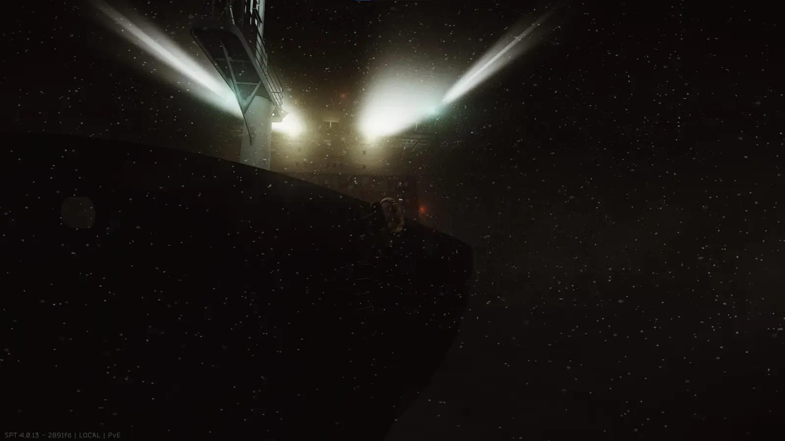
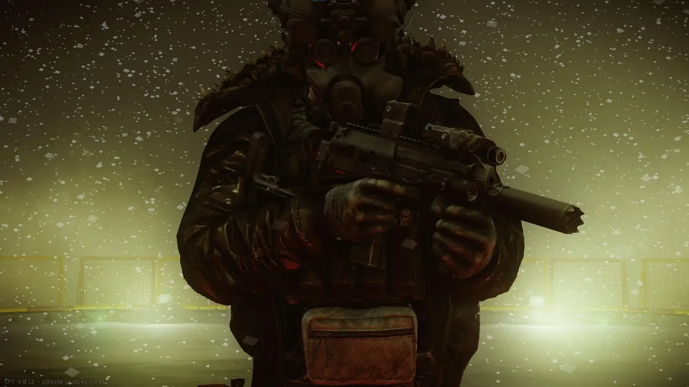
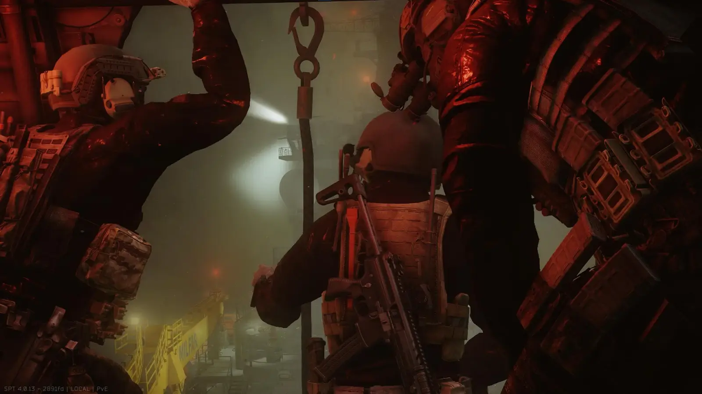
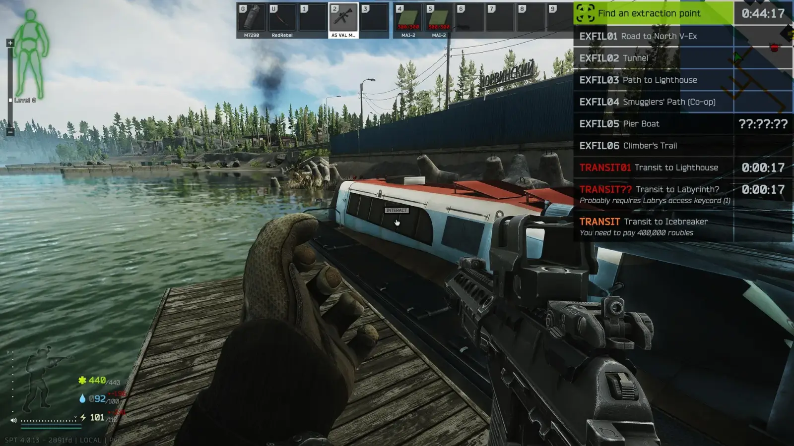

![MANIMAL'S ICEBREAKER BACKPORT[BETA] thumbnail](../../../assets/cb1522b801484701fdd0ab05877f0cac8d18a3cd5cd9cf3ff073670a1a576ecd.webp)
Mod
MANIMAL'S ICEBREAKER BACKPORT[BETA]
- Downloads
- 2,397
- Favourites
- 30
- Mod lists
- 22
The Mod
After a month of blood, sweat, and tears, I am finally releasing this.
This mod backports the ENTIRE Icebreaker map from 1.0 start to finish, including loot, enemies, the transit, and the quests to unlock it. I have painstakingly recreated the map, as well as added some personal details that I thought would make the experience more immersive/enjoyable.
If you like my work and wish to support me, you can do so here: https://ko-fi.com/manimal1920)

GALLERY:



DISCLAIMER AND WARNINGS:
- THIS MOD IS A FANMADE RECREATION BASED HEAVILY ON THE OFFICIAL CONTENT. I HAVE ENSURED IT IS AS CLOSE AS I AM WILLING/ABLE, BUT DO NOT EXPECT IT TO MATCH EXACTLY WITH RETAIL.
- THIS MOD IS CURRENTLY IN A PUBLIC BETA STATE, WHICH MEANS IT WILL CONTAIN MINOR BUGS AND/OR GAMEPLAY ISSUES. DESPITE THIS, THE MOD HAS BEEN REPEATEDLY AND THOROUGHLY TESTED BOTH ONLINE AND OFFLINE, AND I AM CONFIDENT IT WILL FUNCTION FROM START TO FINISH IN A FULLY PLAYABLE STATE.
- PLEASE ENSURE ANY AND ALL FEEDBACK IS CONSTRUCTIVE AND REPRESENTS YOUR PROBLEM CLEARLY. IF NOT, I WILL IGNORE IT.
- THIS PROJECT COULD NOT HAVE BEEN COMPLETED WITHOUT THE HELP AND RESOURCES OF BOTH THE WTT AND SPT COMMUNITIES. THANK YOU ALL VERY MUCH.
Installation
-
Ensure that you have SPT 4.0.13 or higher installed.
-
Ensure you have all of the dependencies listed installed at their most recent versions.
IF USING FIKA:
- Ensure that you have the ICEBREAKER FIKA SYNC addon installed. INSTALL IT EVERYWHERE. Client, server, headless, etc.
Move the zipped files to your SPT installation as shown in the GIF below.

Where to find me
- Here (WTT Discord Channel)
- And here (My EVIL Discord Server….)
Version
0.1.0
SPT ~4.0.13
Fika: compatible
2,397 downloads1.6 GB
- Initial Beta Release
Dependencies
VirusTotal: report 1